The Algorithm That Quietly Runs the Internet
Here is a fun thought experiment: what single mathematical technique powers Google search, Netflix recommendations, facial recognition at airports, and noise reduction in your phone calls? The answer is not some exotic deep learning architecture or a proprietary algorithm cooked up in a Silicon Valley lab. It is a beautifully elegant piece of linear algebra that has been around in one form or another for nearly a century. It is called the Singular Value Decomposition, or SVD for short, and if you work with data in any capacity, it is arguably the most useful tool you have never heard of.
"The SVD is one of the most important algorithms if you want to actually use linear algebra to make money." That bold claim is entirely justified. The SVD shows up everywhere — from the Google PageRank algorithm that decides which links appear first when you search, to the recommender systems at Amazon and Netflix that somehow know what you want before you do, to the facial recognition algorithms that can pick your face out of a crowd in a fraction of a second.
In this first post, we will focus on the big picture. What is the SVD, what does it do, and why should you care? We will keep the math light and the intuition heavy. In Part 2, we will roll up our sleeves and get into the mechanics: how the decomposition actually works, how to truncate it for data compression, and how it connects to Principal Component Analysis (PCA). Let us dive in.
Meet Your Data Matrix
Before we can talk about the SVD, we need to talk about its input: a data matrix. This is not as scary as it sounds. Imagine you have a collection of things you want to analyze, and each thing can be described by a list of numbers. Stack those lists side by side as columns, and you have a data matrix. That is it. That is the entire starting point.
Faces, Flow Fields, and Genes
Let us make this concrete with three examples, all drawn from real-world applications. First, suppose you are building a facial recognition system. You take a photo of a person — say, a one-megapixel image — and you reshape those one million pixel values into a single tall, skinny column vector. Do this for a thousand different people, and you get a matrix with a million rows and a thousand columns. Each column is a person, and each row is a pixel position. This matrix IS your dataset, and it is enormous.
Second, imagine you are studying fluid dynamics — perhaps airflow over an aircraft wing. You run a simulation or an experiment and capture snapshots of the flow field at successive moments in time. Each snapshot is a grid of velocity values at thousands of points in space. Reshape each snapshot into a column, and now your matrix has spatial information in the rows and temporal evolution in the columns. This is exactly how engineers at Boeing, NASA, and research labs around the world analyze complex flows.
Third, consider a genomics study. You have gene expression data from a group of patients: each column is a patient, each row is a gene, and each entry tells you how strongly that gene is expressed in that patient. You might have twenty thousand genes and a few hundred patients, giving you a large but very sparse matrix where most of the interesting structure is hidden. In all three cases, the challenge is the same: you have a massive matrix, and you need to find the important patterns buried inside it. That is precisely what the SVD does for you.
SVD in a Nutshell
Here is the core idea in one sentence: the SVD takes your data matrix and breaks it into three simpler matrices whose product reconstructs the original exactly. In notation, if your data matrix is called $X$, then:
Think of this as a recipe. The matrix $U$ contains the patterns or building blocks found in your data. The matrix $\Sigma$ (capital Sigma) is a diagonal matrix that tells you how important each pattern is — it is like a ranking. And the matrix $V$ tells you how each of your original data points combines those patterns. Together, they give you a complete, lossless description of your data.
Here is a lovely analogy: the SVD is a data-driven generalization of the Fourier transform. The Fourier transform decomposes a signal into sine and cosine waves — universal, one-size-fits-all building blocks that work beautifully for periodic signals. But what if your data does not have nice periodic structure? What if you are looking at turbulent airflow over a wing, or the subtle variations between human faces? There is no off-the-shelf set of mathematical modes that captures that behavior. The SVD solves this problem by learning the building blocks directly from your data. The patterns in $U$ are not sines and cosines — they are whatever your data naturally wants to be decomposed into. That is why we call them tailored to the specific problem.
The Three Characters of the SVD Story
One of the things that makes the SVD so powerful is that each of the three matrices has a clear, intuitive interpretation. Let us meet them one at a time, using the facial recognition example to keep things concrete.
$U$ — The Pattern Library
The columns of $U$ have the exact same shape as a column of your data matrix. In the face example, that means each column of $U$ is itself a one-million-dimensional vector — which can be reshaped back into a face-like image. These are the famous "eigenfaces" you may have heard about. The first column, $u_1$, captures the most dominant pattern of variation across all the faces in your dataset. Perhaps it encodes the overall lighting direction, or the shape of the jawline, or the distance between the eyes. The second column, $u_2$, captures the next most important pattern, and so on.
The beautiful thing is that these patterns are hierarchically ordered. The SVD guarantees that $u_1$ explains more variance in your data than $u_2$, which explains more than $u_3$, and so on. This ordering is not arbitrary — it is mathematically optimal. In the fluid dynamics example, these columns become "eigenflows" — the dominant spatial patterns of the flow field, ranked by how much energy they carry.
$\Sigma$ — The Importance Ranking
The diagonal matrix $\Sigma$ tells you exactly how important each pattern is. Its entries — called singular values — are non-negative and arranged in decreasing order. The first singular value, $\sigma_1$, tells you how much of the total information in your data is captured by the first pattern alone. The second tells you how much the second pattern adds, and so on. This is where the magic happens: in most real-world datasets, the first few singular values are enormous, and the rest taper off rapidly to near zero.

Figure 1: A typical singular value spectrum. The first few components dominate, and there is a clear "elbow" after which additional components add diminishing value.
Figure 1 shows a typical singular value spectrum. Notice how the first bar towers above the rest, and how the values drop off steeply before flattening out. That steep drop is sometimes called the "elbow," and it tells you something profound: you do not need all of your data to capture most of the information. The first few patterns — the ones with the largest singular values — contain almost everything that matters.
$V$ — The Recipe for Each Data Point
If $U$ is the pattern library and $\Sigma$ is the importance ranking, then $V$ tells you the recipe for reconstructing each original data point. The rows of $V^T$ specify exactly how to mix the columns of $U$ (scaled by the singular values) to reconstruct each column of your original data matrix. In the face example, the first row of $V^T$ tells you the precise combination of eigenfaces needed to reconstruct the first person's face. In the fluid dynamics example, the rows of $V$ become "eigen time series" — they tell you how the amplitude of each spatial pattern varies over time as the flow evolves.
To frame this in terms of correlation: when you apply the SVD to a gene expression matrix, the first column of $U$ is a combination of genes that varies the most across patients, the first column of $V$ is a combination of patients that varies the most across genes, and the first singular value quantifies the strength of that correlation. These are sometimes called the "eigenperson" and the "eigengene" — the archetypal patient and the archetypal gene pattern that together capture the dominant signal in your data. This is the foundation of Principal Component Analysis, which we will explore in Part 2.
Where You Have Already Met SVD
The SVD is not just a theoretical curiosity — it is an industrial workhorse. Here are some of the places where it is quietly doing heavy lifting every single day, often without anyone mentioning its name.
| Application | How SVD Is Used | Why It Matters |
|---|---|---|
| Google Search | PageRank uses the dominant eigenvector of the link matrix (computed via SVD). | Determines the order of search results you see every day. |
| Netflix / Amazon | Recommender systems decompose user-item rating matrices. | Powers the "Customers who bought this also bought" feature. |
| Facial Recognition | Eigenfaces from the SVD of face image matrices. | Used in security systems, phone unlock, and photo tagging. |
| Image Compression | Truncated SVD keeps only the top-$r$ components. | JPEG and similar formats use related ideas to shrink file sizes. |
| Noise Reduction | Small singular values often correspond to noise. | Removing them leaves a cleaner signal in audio, images, and sensors. |
| Linear Regression | Solves least-squares problems via pseudoinverse. | The engine behind fitting lines, curves, and models to data. |
What makes the SVD so universally adopted? Three things. First, it is based on simple, interpretable linear algebra — no black boxes, no mysterious parameters to tune. Second, it is guaranteed to exist for any matrix, rectangular or square, and it is essentially unique. Third, it is scalable. Companies like Google and Netflix run SVD computations on datasets with billions of entries. The algorithm has been optimized over decades and is available in every major programming language with a single function call.
Your First SVD in Three Lines of Python
One of the best things about the SVD is how ridiculously easy it is to compute. Here is all the code you need in Python:
import numpy as np
# X is your data matrix (n rows x m columns)
U, S, Vt = np.linalg.svd(X, full_matrices=False)
# That is it. U, S, and Vt are your three matrices.
# S is returned as a 1D array of singular values.
Three lines. That is the entire computation. In MATLAB it is similarly trivial: [U,S,V] = svd(X, 'econ'). In R it is svd(X). The hard part is never computing the SVD — it is knowing what to do with it once you have it, and that is exactly what Part 2 of this series will cover. We will explore how to truncate the SVD for data compression, prove why the truncated version is mathematically optimal (the Eckart-Young theorem), and connect it all to PCA and linear regression.
Coming Up in Part 2
In this post, we have covered the intuition: what the SVD is, what the three matrices mean, and why it matters. But we have barely scratched the surface of what you can do with it. In Part 2, we will get into the real mechanics. We will see how the SVD can be rewritten as a sum of rank-one matrices, why truncating that sum gives you the best possible low-rank approximation of your data (and what "best" means precisely), and how this connects to the broader world of dimensionality reduction and machine learning.
Until next time, remember: the next time Google gives you exactly the result you were looking for, or Netflix recommends a show you end up binging, there is a good chance the SVD had something to do with it.